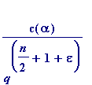
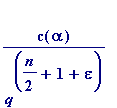
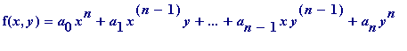
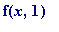
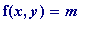
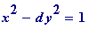
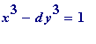
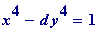

Axel Thue (1863-1922)
Thue's Theorem (1909) . Let be any real algebraic number of degree n ( at least 3), and let be any positive constant ( however small ), then there is a positive constant (i.e. the value of c depends
only
on
 and
) such that
and
) such that
 >

... (i')
>

... (i')
One can only write of the fundamental importance of that result by resorting to hyperbole.
I highly recommend Wolfgang Schmidt's AMS Bulletin (1978) review of Selected mathematical papers of Axel Thue , from which I quote:
" His greatest work, on approximation to algebraic numbers, appeared in 1908/1909, when he was well in his forties, and when he had been away from the centres of mathematics for over a decade. ... Landau called it
[the above theorem, and its application to the related
Thue equation
]
the most important discovery in elementary number theory which he had witnessed in his lifetime. He also said ten years after its publication that already ten competent mathematicians had read Thue's paper.
"
[JC comment. Far be it from me to correct Schmidt's English (his first language is German) but I think any reader will believe that what Landau said, ten years after the publication of Thue's paper, was that
only
ten competent... ]
" Siegel, trying to understand Thue's paper, rewrote it , and in the process ..."
[introduced refinements which improved the above (i'), see next section]
" ... Thue's papers are sometimes difficult to read, not in the least because often the reader does not know until the end where the investigation is leading to."
__________
A fundamental (and easy) consequence of Thue's theorem. Let

be a homogeneous form of degree at least 3 such that  has no repeated zero, then the Diophantine equation  has only finitely many solutions for integral .
In particular the cubic and higher degree versions of the classic Fermat-Pell equation  (which have infinitely many integral solutions for every non-square natural number d ) have only a finite number of solutions:
- For every integer d , the equation  has only a finite number of solutions in integers x and y
- For every integer d , the equation  has only a finite number of solutions in integers x and y